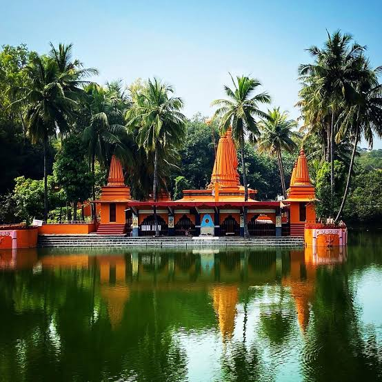

BACKRamdara Temple

Ramdara temple is a perfect blend of Natuce, tranquility, religion and history.
It is located at Loni kalbor village in odtskirts of Pune city.
Temple was built by Shri Devipuri Maharaj (Dhundi baba) in 1978 with the help of villagers near the ancie
According to locals there were some ancient temple dating to antiquity there and a well which was believe and
Goddess Sita in ancient times. Baba personally designed the Temple according to the ancient Science o
designed the moat and Lake which harvested rain water during the Monsoons.Distance of temple: It is km:25
One can hire a car. After crossing toni toll naka in few minutes one can see small bridge after crossing: and 18 kms from Hadapsar.
How to reach temple: Best way to reach temple is by own vehicle (2 wheeler or 4 wheeler). There are no diri
and proceed towards village and then take a right turn from chowk and travel 6-7 kms to reach temple..Roar
Parking Charges: Parking charges is 20 rs for two wheelers and 48 rs for Four Wheelers. Temple visiting
is 9 am and closing time of temple is 5 pm.